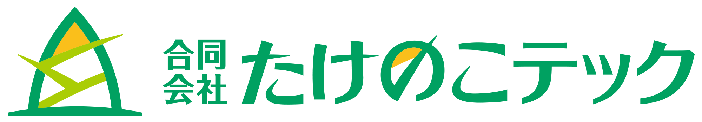

合同会社たけのこテックでは2014年の創立以来、 高品質のシステムをクライアントの皆様に提供させていただいています。 琵琶湖の畔に所在する当社では3名の社員が働いており、 様々な形で情報技術や電子技術の提供を行っております。
アプリケーション開発
業務のサポートを行うWebアプリケーション開発や研究に用いるソフトウェアの開発等を行っております．
- 業務システム（出退勤管理、社内規程閲覧、社内報配信など）
- 海上交通流シミュレーション計算結果データ抽出・加工プログラム
- AISによるリアルタイム船舶位置情報表示システム
- 粒子法シミュレーション結果レンダリング
- シミュレーションシステムの高速化
電子回路の設計・制作
電子回路の設計から完成品の納品まで，多数の実績がございます．
- 多機能インターフェース基板
- センサーアンプ
- フレキシブルセンサー基板
- アクチュエータ制御基板
- 小型5軸DCモーター制御基板
- ワイヤレス充電検証基板
※実験装置やロボットの開発に係る実験補助なども承ります
サーバーのセットアップ，管理
中小企業の社内サーバーのセットアップやネットワーク設計・構築，内線のIP電話網の設定等の実績があります．
システムアドバイザー・コンサルタント
業務の電子化を進めていく際，実際の業務内容等を考慮した提案をさせて頂きます．